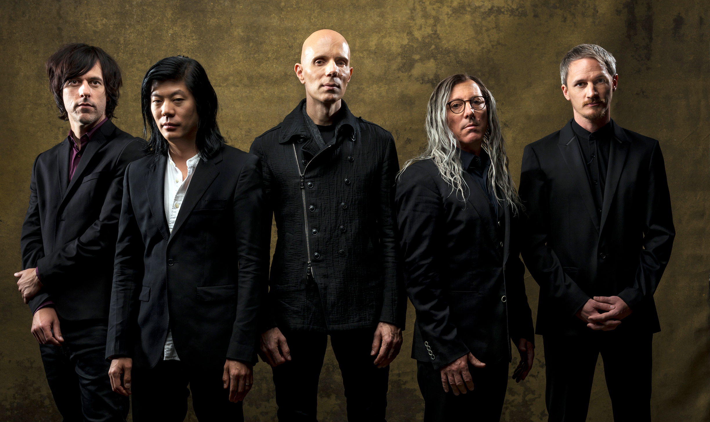

A Perfect Circle is an American rock supergroup formed in 1999 by guitarist Billy Howerdel and Tool vocalist Maynard James Keenan. A Perfect Circle has released four studio albums, the first three during the early 2000s: Mer de Noms, their debut album in 2000, and followed up by Thirteenth Step in 2003; then in 2004, Emotive—an album of radically re-worked cover songs. Shortly after Emotive's release, the band went on hiatus; Keenan returned to Tool and started up solo work under the band name Puscifer. and Howerdel released a solo album, Keep Telling Myself It's Alright, under the moniker Ashes Divide. Band activity was sporadic in the following years; the band reformed in 2010, and played live shows on and off between 2010 and 2013, but fell into inactivity after the release of their greatest hits album, Three Sixty, and a live album box set, A Perfect Circle Live: Featuring Stone and Echo in late 2013. The band reformed in 2017 to record a fourth album, Eat the Elephant, which was released on April 20, 2018. 
Prone to downtime due to Keenan's other musical commitments, the band has featured a variety of musicians in the other roles throughout its alternating periods of activity and inactivity, and the band had changed their line-up on each albums, leaving Keenan and Howerdel as the only constant members of the band. The original incarnation of the band included Paz Lenchantin on bass, Troy Van Leeuwen on guitar, and Josh Freese on drums. Primus drummer Tim Alexander had briefly stood in as a drummer prior to Freese in the band's initial live shows; however, this was prior to releasing any material. Band collaborator and producer Danny Lohner and Marilyn Manson bassist Jeordie White were also members for a short period in the early 2000s. The band's current lineup features Smashing Pumpkins guitarist James Iha, bassist Matt McJunkins, and drummer Jeff Friedl, the latter two also being contributors to the related Puscifer and Ashes Divide projects. Despite the varied cast and numerous lineup changes, the stylistic content of A Perfect Circle's songs has remained consistent with Howerdel as music composer, and Keenan writing lyrics and vocal melodies. The band's studio albums have been generally well received critically and commercially, with their first three studio albums selling 4 million copies collectively as of 2005.